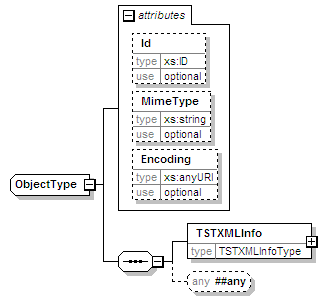
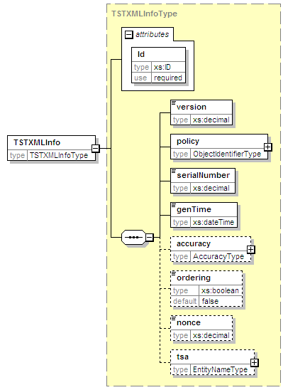

| diagram |  | ||||||||||||||||||||||||
| namespace | urn:oasis:names:tc:evs:schema:eml:ts | ||||||||||||||||||||||||
| properties |
|
||||||||||||||||||||||||
| children | TSTXMLInfo | ||||||||||||||||||||||||
| used by |
|
||||||||||||||||||||||||
| attributes |
|
||||||||||||||||||||||||
| source | <xs:complexType name="ObjectType" mixed="true"> <xs:sequence> <xs:element name="TSTXMLInfo" type="TSTXMLInfoType"/> <xs:any namespace="##any" processContents="lax" minOccurs="0"/> </xs:sequence> <xs:attribute name="Id" type="xs:ID" use="optional"/> <xs:attribute name="MimeType" type="xs:string" use="optional"/> <xs:attribute name="Encoding" type="xs:anyURI" use="optional"/> <!-- add a grep facet --> </xs:complexType> |
| type | xs:ID | ||||
| properties |
|
||||
| source | <xs:attribute name="Id" type="xs:ID" use="optional"/> |
| type | xs:string | ||||
| properties |
|
||||
| source | <xs:attribute name="MimeType" type="xs:string" use="optional"/> |
| type | xs:anyURI | ||||
| properties |
|
||||
| source | <xs:attribute name="Encoding" type="xs:anyURI" use="optional"/> |
| diagram |  | ||||||||||||
| namespace | urn:oasis:names:tc:evs:schema:eml:ts | ||||||||||||
| type | TSTXMLInfoType | ||||||||||||
| properties |
|
||||||||||||
| children | version policy serialNumber genTime accuracy ordering nonce tsa | ||||||||||||
| attributes |
|
||||||||||||
| source | <xs:element name="TSTXMLInfo" type="TSTXMLInfoType"/> |